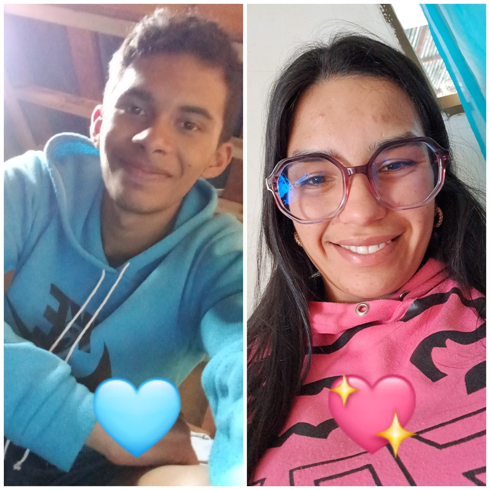
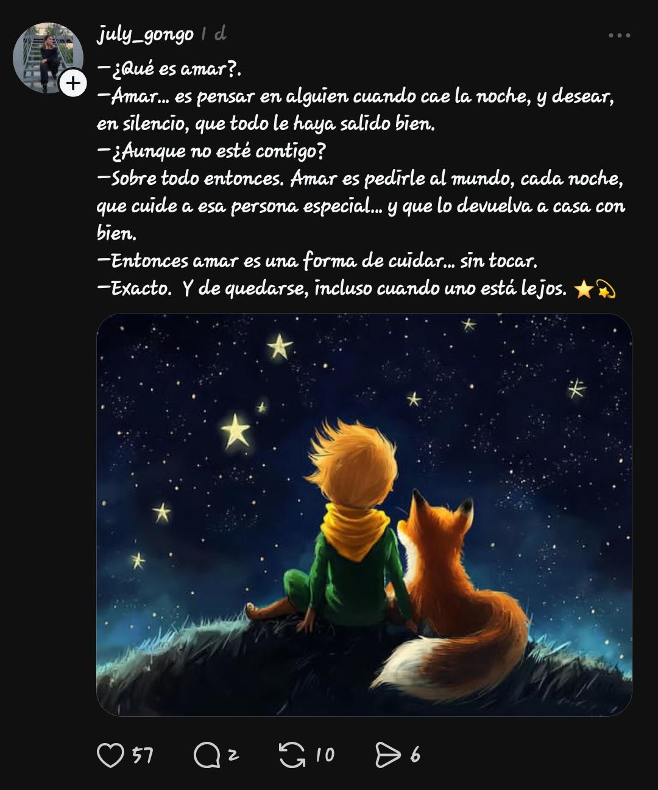

Escaneando... (usa la cámara trasera)


Cada día a tu lado es mi aventura favorita. Te quiero.
Un hilo invisible que se convirtió en un lazo, mi niña, como el zorro y el principito. 💗 Al principio, solo eran dos extraños en medio de la inmensidad. 🌌 Para el Principito, el zorro era solo un zorro idéntico a cien mil otros zorros. Para el zorro, el niño era solo un niño más, un habitante pasajero de un universo que a veces resulta demasiado grande y solitario. 🌎 pero entonces, el zorro pronunció esa palabra mágica que lo cambiaría todo: Domesticar. ✨ Domesticar no es poseer, ni dominar, ni encadenar. Domesticar, en el idioma del zorro, significa crear lazos. 🤝 Es el acto valiente de mirar a alguien entre la multitud y decirle, en un tierno silencio: "Decido que seas única para mí". 🌹 Y es que los lazos no se construyen con prisa; se necesita tiempo y mucha paciencia para acortar cualquier distancia. ⏳ Es sentarse un poco más cerca cada día, aprender a cruzarse con las miradas y descubrir cómo escucharse sin palabras (aunque a veces yo sea un poco malo para eso). 🙈 Al final, la verdad más pura es que no se ve bien sino con el corazón, porque lo esencial es invisible a los ojos. 👁️❤️ Las cosas más bellas de la vida la lealtad, la ternura, el amor, la complicidad no se pueden tocar ni comprar, simplemente se sienten en lo más profundo. Y nos convertimos, para siempre, en responsables de aquello que hemos domesticado. 🦊👑 Y ciertamente tú me domesticaste a mí; eso significan hoy nuestros collares, un lazo eterno e inquebrantable entre nosotros, mi niña, que se lleva en el alma y se ve con toda la fuerza en nuestro JM301. 🔐💞